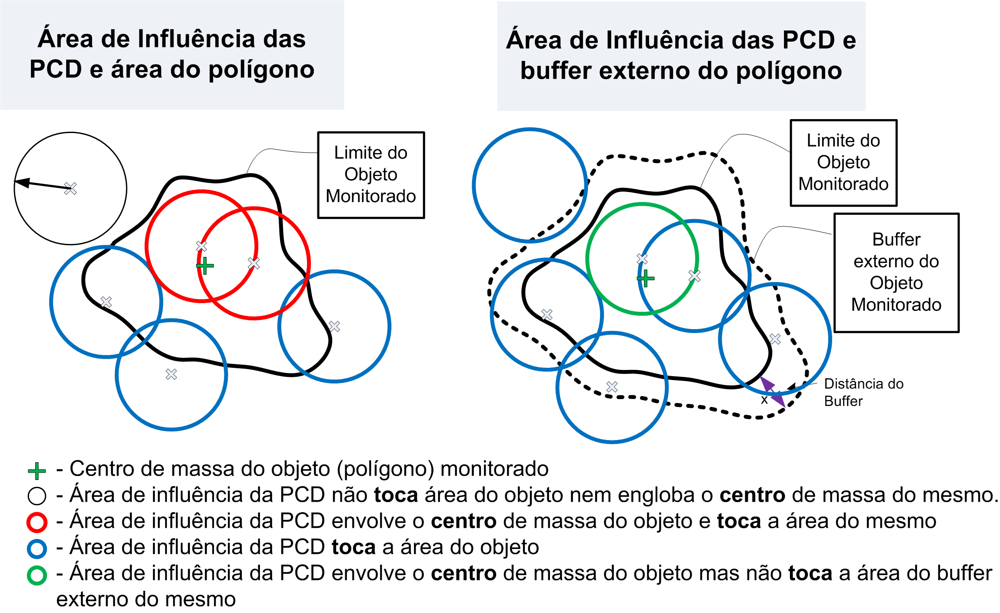
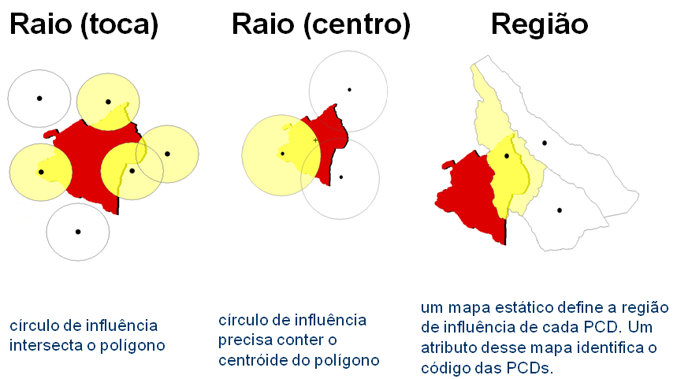
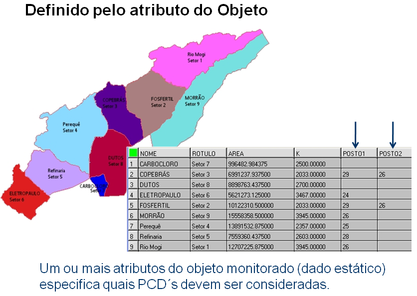

Operadores zonais de PCDs
Operadores zonais de PCD (Plataforma de Coleta de Dados) são utilizados para obter estatísticas sobre as fontes de dados do tipo de PCD. Consideram a localização fixa dos pontos e obedecem a uma regra de influência ou uma lista informando quais serão os pontos de PCD que serão considerados para cada objeto a ser monitorado ou a área de influência (buffer) dos mesmos. Cada PCD pode ter seu próprio conjunto de atributos associados.
A Figura 3.21 mostra a área de influência de alguns pontos de PCD em relação a área de um objeto monitorado e em relação ao buffer externo (apenas anel externo sem considerar a área de objeto) desse mesmo objeto.

Figura 3.21 – Diferenças de abordagens da relação entre a área de influência de PCD´s e um objeto monitorado ou um “buffer” externo deste objeto.
NOTA: Os operadores e utilitários desse item utilizam dos dados das PCD´s de forma discreta, pois as medidas realizadas são reais nos pontos de localização de cada PCD. Neste caso, um conjunto de regras de influência podem ser aplicadas a cada localização. Outra maneira de utilizar os dados de PCD, de forma contínua, é a partir de um dado matricial criado pela interpolação de uma variável escolhida. O dado dinâmico matricial resultante da interpolação pode ser utilizado igualmente como qualquer outro dado matricial. Veja a lista de operadores zonais de grades.
Antes de usar os operadores devemos conhecer os utilitários de PCD que permitem definir as regras de influência, descrito a seguir.
1- Regra de Influência
Há dois utilitários para definir quais PCD´s serão consideradas para cada objeto monitorado, um baseado em regras e outro nos atributos do próprio objeto. O utilitário baseado em regras depende do tipo escolhido pelo usuário, isto é, se toca a área do objeto ou seu “buffer”, se envolve o centro de massa da área do objeto ou seu “buffer” ou uma região específica para cada PCD. Para os tipos toca e centro, um valor de raio deverá ser informado na análise. A Figura 3.22 mostra os três tipos de regras de influência.
SINTAXE GERAL:
dcp.zonal.influence.by_attribute("<dynamic_data_dcp>", <list_attribute>)
dcp.zonal.influence.by_rule("<dynamic_data_dcp>", [<buffer>])
onde:
- dynamic_data_dcp : String com o nome da série de dados de PCD;
- list_attribute: Parâmetro contendo a lista de atributos do objeto monitorado contendo ID´s das PCD´s que o influenciam. Ex. [att1, att2, att3] ;
- buffer : [Opcional] “Buffer” para ser aplicado ao objeto monitorado. Ver utilitário “buffer” acima.

Figura 3.22 – Diferentes regras de influência das PCDs
A Figura 3.23 mostra um mapa contendo polígonos de algumas bacias hidrográficas e a tabela de atributos associada. Duas colunas dessa tabela especificam os códigos das PCDs que devem ser utilizados por cada bacia.

Figura 3.23 – Mapa e a tabela de atributos com código das PCDs a serem utilizados.
NOTA: Em ambos os utilitários o resultado será uma lista contendo as PCDs que serão utilizados por cada objeto monitorado.
A seguir são apresentados três tipos de operadores: Zonal, Zonal histórico e Zonal histórico por intervalo. A descrição de cada tipo a seguir.
2- Zonal
Grupo de operadores que consideram as PCD´s que influenciam o objeto monitorado e utilizam somente a última medida obtidas por cada PCD.
SINTAXE GERAL:
dcp.zonal.<operator>("<dynamic_data_dcp>", <buffer>, "<attribute>", <list_dcp>)
onde:
- operator: Count, Min, Max, Mean, Median, Sum, Standard_deviation, Variance;
- dynamic_data_dcp: String com o nome da série de dados de PCD;
- buffer: Buffer para ser aplicado ao objeto monitorado. Parâmetro obrigatório somente para operador “count”. Ver utilitário Buffer;
- attribute: String com o nome do atributo da PCD que deve ser utilizado para recuperar valores estatísticos. O atributo deve ser do tipo numérico (Ex. Integer, Float, Double, Long). Não usar para operador “count”;
- list_dcp: Lista contendo a identificação das PCD´s que influenciam o objeto monitorado. Ver utilitário “Regra de Influência”. Não usar se operador zonal for “count”.
Segue a descrição de cada operador.
Zonal: Contagem
Retorna o número de PCD´s que influenciam o objeto monitorado ou sua área de influência. Depende do valor de raio informado para definir a área ao redor de cada PCD para os tipos Centro ou Toca, ou áreas se tipo for Região.
Sintaxe:
dcp.zonal.count("<dynamic_data_dcp>", <buffer>)
Exemplo: buf1 = Buffer(BufferType.Out_union, 2, "km")
x = dcp.zonal.count("estacoes", buf1)
Zonal: Mínimo
Retorna o menor valor de um atributo comum das PCD´s que influenciam cada geometria de um objeto monitorado.
Sintaxe:
dcp.zonal.min("<dynamic_data_dcp>", "<attribute>", <list_dcp>)
Exemplo: b1 = Buffer(BufferType.Out_union, 2, "km")
ids = dcp.influence.by_rule("Serra do Mar", b1)
x = dcp.zonal.min("Serra do Mar", "Pluvio", ids)
Zonal: Máximo
Retorna o maior valor de um atributo comum das PCD´s que influenciam cada geometria de um objeto monitorado.
Sintaxe:
dcp.zonal.max("<dynamic_data_dcp>", "<attribute>", <list_dcp>)
Exemplo: b1 = Buffer(BufferType.Out, 400, "m")
ids = dcp.influence.by_rule("Serra do Mar", b1)
x = dcp.zonal.max("Serra do Mar", "Pluvio", ids)
Zonal: Média
Retorna a média dos valores de um atributo comum das PCD´s que influenciam cada geometria de um objeto monitorado.
Sintaxe:
dcp.zonal.mean("<dynamic_data_dcp>", "<attribute>", <list_dcp>)
Exemplo: b1 = Buffer(BufferType.Level, 10, "km", 5, "km")
ids = dcp.influence.by_rule("Serra do Mar", b1)
x = dcp.zonal.mean("Serra do Mar", "Chuva", ids)
Zonal: Mediana
Retorna a mediana dos valores de um atributo comum das PCD´s que influenciam cada geometria de um objeto monitorado.
Sintaxe:
dcp.zonal.median("<dynamic_data_dcp>", "<attribute>", <list_dcp>)
Exemplo: b1 = Buffer(BufferType.Out, 800, "m")
ids = dcp.influence.by_rule("Serra do Mar", b1)
x = dcp.zonal.median("Serra do Mar", "temperatura", ids)
Zonal: Soma
Retorna a soma dos valores de um atributo comum das PCD´s que influenciam cada geometria de um objeto monitorado.
Sintaxe:
dcp.zonal.sum("<dynamic_data_dcp>", "<attribute>", <list_dcp>)
Exemplo: ids = dcp.influence.by_attribute("Serra do Mar", [att1, att2, att2, att4])
x = dcp.zonal.sum("Serra do Mar", "temperatura", ids)
Zonal: Desvio Padrão
Retorna o desvio padrão dos valores de um atributo comum das PCD´s que influenciam cada geometria de um objeto monitorado.
Sintaxe:
dcp.zonal.standard_deviation("<dynamic_data_dcp>", "<attribute>", <list_dcp>)
Exemplo: b1 = Buffer(BufferType.Out, 800, "m")
ids = dcp.influence.by_rule("Serra do Mar", b1)
x = dcp.zonal.standard_deviation("Serra do Mar", "temperatura", ids)
Zonal: Variância
Retorna a variância dos valores de um atributo comum das PCD´s que influenciam cada geometria de um objeto monitorado.
Sintaxe:
dcp.zonal.variance("<dynamic_data_dcp>", "<attribute>", <list_dcp>)
Exemplo: b1 = Buffer(BufferType.In, 800, "m")
ids = dcp.influence.by_rule("Serra do Mar", b1)
x = dcp.zonal.variance("Serra do Mar", "temperatura", ids)
3- Zonal histórico
Grupo de operadores que consideram as PCD´s que influenciam o objeto monitorado e utilizam as últimas medidas obtidas por cada PCD, no intervalo de tempo definido entre a data/hora atual e o valor de tempo informado no passado.
SINTAXE GERAL:
dcp.zonal.history.<operator>("<dynamic_data_dcp>", "<attribute>", "<time>", <list_dcp>)
onde:
- operator : Min, Max, Mean, Sum, Median, Standard_deviation, Variance;
- dynamic_data_dcp : String com o nome da série de dados de PCD;
- attribute : String com o nome do atributo da PCD que deve ser utilizado para recuperar valores estatísticos. O atributo deve ser do tipo numérico (Ex. Integer, Float, Double, Long). Não usar para operador “count”;
- time : String com o intervalo de tempo, a partir da hora atual, para filtrar os valores das PCD´s. Este intervalo será aberto (< x) no valor informado e fechado ( = ) na hora atual. Ver utilitário unidades de tempo;
- list_dcp : lista contendo a identificação das PCD´s que influenciam o objeto monitorado. Ver utilitário “Regra de Influência”. Não usar se operador zonal for “count”.
Segue a descrição de cada operador.
Zonal histórico: Mínimo
Retorna o menor valor de um atributo comum das PCD´s que influenciam cada geometria de um objeto monitorado, no intervalo de tempo definido entre a data/hora atual e o valor de tempo informado no passado.
Sintaxe:
dcp.zonal.history.min("<dynamic_data_dcp>", "<attribute>", "<time>", <list_dcp>)
Exemplo: b1 = Buffer(BufferType.Out_union, 2, "km")
ids = dcp.influence.by_rule("Serra do Mar", b1)
x = dcp.zonal.history.min("Serra do Mar", "Pluvio“, “1d”, ids)
Zonal histórico: Máximo
Retorna o maior valor de um atributo comum das PCD´s que influenciam cada geometria de um objeto monitorado, no intervalo de tempo definido entre a data/hora atual e o valor de tempo informado no passado.
Sintaxe:
dcp.zonal.history.max("<dynamic_data_dcp>", "<attribute>", "<time>", <list_dcp>)
Exemplo: b1 = Buffer(BufferType.Out, 400, "m")
ids = dcp.influence.by_rule("Serra do Mar", b1)
x = dcp.zonal.history.max("Serra do Mar", "Pluvio", "30h", ids)
Zonal histórico: Média
Retorna a média dos valores de um atributo comum das PCD´s que influenciam cada geometria de um objeto monitorado, no intervalo de tempo definido entre a data/hora atual e o valor de tempo informado no passado.
Sintaxe:
dcp.zonal.history.mean("<dynamic_data_dcp>", "<attribute>", "<time>", <list_dcp>)
Exemplo: b1 = Buffer(BufferType.Level, 10, "km", 5, "km")
ids = dcp.influence.by_rule("Serra do Mar", b1)
x = dcp.zonal.history.mean("Serra do Mar", "Chuva", "3d", ids)
Zonal histórico: Mediana
Retorna a mediana dos valores de um atributo comum das PCD´s que influenciam cada geometria de um objeto monitorado, no intervalo de tempo definido entre a data/hora atual e o valor de tempo informado no passado.
Sintaxe:
dcp.zonal.history.median("<dynamic_data_dcp>", "<attribute>", "<time>", <list_dcp>)
Exemplo: b1 = Buffer(BufferType.Out, 800, "m")
ids = dcp.influence.by_rule("Serra do Mar", b1)
x = dcp.zonal.history.median("Serra do Mar", "temperatura", "360min", ids)
Zonal histórico: Soma
Retorna a soma dos valores de um atributo comum das PCD´s que influenciam cada geometria de um objeto monitorado, no intervalo de tempo definido entre a data/hora atual e o valor de tempo informado no passado.
Sintaxe:
dcp.zonal.history.sum("<dynamic_data_dcp>", "<attribute>", "<time>", <list_dcp>)
Exemplo: ids = dcp.influence.by_attribute("Serra do Mar", [att1, att2, att2, att4])
x = dcp.zonal.history.sum("Serra do Mar", "temperatura", "5h", ids)
Zonal histórico: Desvio Padrão
Retorna o desvio padrão dos valores de um atributo comum das PCD´s que influenciam cada geometria de um objeto monitorado, no intervalo de tempo definido entre a data/hora atual e o valor de tempo informado no passado.
Sintaxe:
dcp.zonal.history.standard_deviation("<dynamic_data_dcp>", "<attribute>", "<time>", <list_dcp>)
Exemplo: b1 = Buffer(BufferType.Out, 800, "m")
ids = dcp.influence.by_rule("Serra do Mar", b1)
x = dcp.zonal.history.standard_deviation("Serra do Mar", "temperatura", "1w", ids)
Zonal histórico: Variância
Retorna a variância dos valores de um atributo comum das PCD´s que influenciam cada geometria de um objeto monitorado, no intervalo de tempo definido entre a data/hora atual e o valor de tempo informado no passado.
Sintaxe:
dcp.zonal.history.variance("<dynamic_data_dcp>", "<attribute>", "<time>", <list_dcp>)
Exemplo: b1 = Buffer(BufferType.In, 800, "m")
ids = dcp.influence.by_rule("Serra do Mar", b1)
x = dcp.zonal.history.variance("Serra do Mar", "temperatura", "24h", ids)
4- Zonal histórico por intervalo
Grupo de operadores que consideram as PCD´s que influenciam o objeto monitorado e utilizam as últimas medidas obtidas por cada PCD, no intervalo de tempo definido entre dois valores de tempo informado no passado.
SINTAXE GERAL:
dcp.zonal.history.interval.<operator>("<dynamic_data_dcp>", "<attribute>", "<time_begin>", "<time_end>", <list_dcp>)
onde:
- operator : min, max, mean, sum, median, standard_deviation, variance;
- dynamic_data_dcp: String com o nome da série de dados de PCD;
- attribute: String com o nome do atributo da PCD que deve ser utilizado para recuperar valores estatísticos. O atributo deve ser do tipo numérico (Ex. Integer, Float, Double, Long). Não usar para operador “count”;
- time_begin: String inicial (mais antigo) do intervalo de tempo para filtrar os dados. Este valor será aberto (< tempo mais antigo) no tempo informado;
- time_end: String final (mais recente) do intervalo de tempo para filtrar os dados. Este valor será fechado ( <= tempo mais recente) no tempo informado;
- list_dcp: lista contendo a identificação das PCD´s que influenciam o objeto monitorado. Ver utilitário “Regra de Influência”. Não usar se operador zonal for “count”.
Segue a descrição de cada operador.
Zonal histórico por intervalo: Mínimo
Retorna o menor valor de um atributo comum das PCD´s que influenciam cada geometria de um objeto monitorado, no intervalo de tempo inicial e final informado no passado em função da data/hora atual.
Sintaxe:
dcp.zonal.history.interval.min(“<dynamic_data_dcp>”, “<attribute>”, “<time_begin>”, “<time_end>”, <list_dcp>)
Exemplo: b1 = Buffer(BufferType.Out_union, 2, "km")
ids = dcp.influence.by_rule("Serra do Mar", b1)
x = dcp.zonal.history.interval.min("Serra do Mar", "Pluvio", "2d", '1d', ids)
Zonal histórico por intervalo: Máximo
Retorna o maior valor de um atributo comum das PCD´s que influenciam cada geometria de um objeto monitorado, no intervalo de tempo inicial e final informado no passado em função da data/hora atual.
Sintaxe:
dcp.zonal.history.interval.max(“<dynamic_data_dcp>”, “<attribute>”, “<time_begin>”, “<time_end>”, <list_dcp>)
Exemplo: b1 = Buffer(BufferType.Out, 400, "m")
ids = dcp.influence.by_rule("Serra do Mar", b1)
x = dcp.zonal.history.interval.max("Serra do Mar", "Pluvio", "24h", "12h", ids)
Zonal histórico por intervalo: Média
Retorna a média dos valores de um atributo comum das PCD´s que influenciam cada geometria de um objeto monitorado, no intervalo de tempo inicial e final informado no passado em função da data/hora atual.
Sintaxe:
dcp.zonal.history.interval.mean("<dynamic_data_dcp>", "<attribute>", "<time_begin>", "<time_end>", <list_dcp>)
Exemplo: b1 = Buffer(BufferType.Level, 10, "km", 5, "km")
ids = dcp.influence.by_rule("Serra do Mar", b1)
x = dcp.zonal.history.interval.mean("Serra do Mar", "Chuva", "24d", "12d", ids)
Zonal histórico por intervalo: Mediana
Retorna a mediana dos valores de um atributo comum das PCD´s que influenciam cada geometria de um objeto monitorado, no intervalo de tempo inicial e final informado no passado em função da data/hora atual.
Sintaxe:
dcp.zonal.history.interval.median("<dynamic_data_dcp>", "<attribute>", "<time_begin>", "<time_end>", <list_dcp>)
Exemplo: b1 = Buffer(BufferType.Out, 800, "m")
ids = dcp.influence.by_rule("Serra do Mar", b1)
x = dcp.zonal.history.interval.median("Serra do Mar", "temperatura", "2d", "1d", ids)
Zonal histórico por intervalo: Soma
Retorna a soma dos valores de um atributo comum das PCD´s que influenciam cada geometria de um objeto monitorado, no intervalo de tempo inicial e final informado no passado em função da data/hora atual.
Sintaxe:
dcp.zonal.history.interval.sum("<dynamic_data_dcp>", "<attribute>", "<time_begin>", "<time_end>", <list_dcp>)
Exemplo: ids = dcp.influence.by_attribute("Serra do Mar", [att1, att2, att2, att4])
x = dcp.zonal.history.interval.sum("Serra do Mar", "temperatura", "2d", "1d", ids)
Zonal histórico por intervalo: Desvio Padrão
Retorna o desvio padrão dos valores de um atributo comum das PCD´s que influenciam cada geometria de um objeto monitorado, no intervalo de tempo inicial e final informado no passado em função da data/hora atual.
Sintaxe:
dcp.zonal.history.interval.standard_deviation("<dynamic_data_dcp>", "<attribute>", "<time_begin>", "<time_end>", <list_dcp>)
Exemplo: b1 = Buffer(BufferType.Out, 800, "m")
ids = dcp.influence.by_rule("Serra do Mar", b1)
x = dcp.zonal.history.interval.standard_deviation("Serra do Mar", "temperatura", "2d", "1d", ids)
Zonal histórico por intervalo: Variância
Retorna a variância dos valores de um atributo comum das PCD´s que influenciam cada geometria de um objeto monitorado, no intervalo de tempo inicial e final informado no passado em função da data/hora atual.
Sintaxe:
dcp.zonal.history.interval.variance("<dynamic_data_dcp>", "<attribute>", "<time_begin>", "<time_end>", <list_dcp>)
Exemplo: b1 = Buffer(BufferType.In, 800, "m")
ids = dcp.influence.by_rule("Serra do Mar", b1)
x = dcp.zonal.history.interval.variance("Serra do Mar", "temperatura", "2d", "1d", ids)